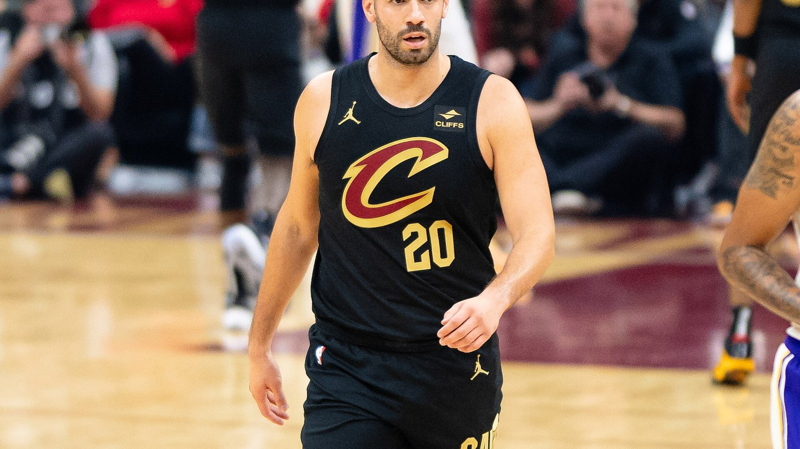

ウォリアーズがジョージ・ニアングと 1年390万ドルで契約合意 —— ブランドン・ウィリアムズに続く今夏2人目の補強、15人ロースターが確定
ゴールデンステート・ウォリアーズは、フリーエージェントのベテランパワーフォワード、ジョージ・ニアングと1年390万ドルで契約合意に達した。ESPNのシャムズ・チャラニア氏が8月25日、リーグ関係者の話として伝えた。これでウォリアーズの今シーズンのロースター15人が全て埋まった。

契約合意は同日2件目 —— ブランドン・ウィリアムズに続く今夏唯一の外部補強
ウォリアーズは同日、控えガードのブランドン・ウィリアムズとも1年契約(NBA最低保証額)で合意しており、ニアングは今夏2人目の外部フリーエージェント補強となる。大きな入れ替えのなかった安定的なオフシーズンを送ってきたウォリアーズにとって、この2件が今夏唯一の外部からの加入だという。
左足骨折で昨シーズンを全休 —— 故障前は3P成功率39.9%の貴重なスペーサー
ニアングは昨年9月に左足を骨折し、2025-26シーズンを全休した。それ以前は出場の安定感が際立っており、直近5シーズンでそれぞれ72、76、78、82、79試合に出場。キャリア通算の3ポイント成功率は39.9%と高水準を保ち、豊富な出場機会の中で高確率のスペーサーとしての役割を果たしてきた。
グリーン、ポルジンギス、ホルフォードらの後方に控えるベンチ戦力 —— 2017年のトレーニングキャンプ以来9年越しの加入
ニアングは、ドレイモンド・グリーン、クリスタプス・ポルジンギス、アル・ホーフォード、そしてルーキーのヤクセル・レンデボーグに続く、フロントコートの控えとしての起用が見込まれている。ウォリアーズとは縁があり、2017年に同チームのトレーニングキャンプに参加した際、Gリーグ傘下のサンタクルーズ・ウォリアーズでプレーした経歴を持つ。
出典: ESPN「Sources: Warriors to sign Niang, completing roster」
https://www.espn.com/nba/story/_/id/49726223/sources-warriors-sign-georges-niang-completing-roster